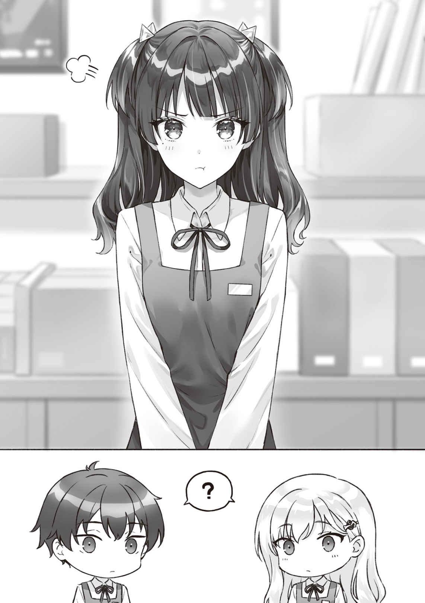

●10月20日（水曜日）
朝から洗面台の前に立って
──気がかりがあって、それですこし気分がダウンしがちなんだ。
しかしなぁ。
俺は鏡の中の自分の顔を見つめる。
シェービングクリームで覆われている
「ふう……」
蛇口を閉めてタオルを手に取る。
以前の俺ならば、このあとは肌についている水気をタオルで拭きとって終わりにしていたのだけれど、今は化粧水と乳液を塗ることにしていた。いわゆるスキンケアである。お
清潔感や好感度という他者評価の
健康に
そこで昨日の綾瀬さんの表情を思い浮かべる。顔色が悪かったわけでもないんだよな。だから体が不調ということではないんだろう。気がかり、か。
鏡の前で昨日の綾瀬さんとのやりとりを思い出しながらぼうっとしていたら、背後から現れた
「どうって……いやべつに」
「そうかい？ なんかえらく考えごとをしていたみたいだけど」
なんてあっさりと悟られるほど俺は悩んでいたらしい。
「いや。うん。とくにないよ。起き抜けでぼうっとしてただけ」
そのまま洗面台を
キッチンに入ると、朝食の支度に取り掛かった。
といっても俺が当番のときは凝った調理をするわけでもない。昨夜のうちにタイマーでセットしておいたから飯は炊けているし、
あとは
「
「ああ。おはよう、
親父より先に綾瀬さんがダイニングにやってくる。すでに制服も着替え終わっているところをみると、起きたのはずっと前なのだろう。やや遅れて身支度を整えた親父も入ってきた。
亜季子さんは例によって帰ってきたのが朝方なのでまだ寝室で就寝中である。
三人が椅子に座るといただきますと手を合わせて食事になる。
「なんだか今日は静かだねえ」
まあ、
「そういえば
なぜ俺にだけ水を向けるのか。俺と同じくらいさっきから綾瀬さんも何も
それとも綾瀬さんの様子がおかしいことには親父も気づいていて、でも娘の悩みごとに口を出して、うるさがられる父親役はやりたくない、とかだろうか。いや、その行動原理は親父らしくない気がする。
「俺はとくになにもない、けど」
「けど？」
それより綾瀬さんがさ、と視線で親父に訴えようと思ったのだけど──。
「悠太兄さん、気にしないでって言ったのに」
──俺の言いたいことを察した綾瀬さんが機先を制してきた。
心配だけど、こんな調子でさ……という内心含みの目で「伝われ！」と親父のほうを見たら、さっと視線を
親父の行動の不自然さについて考える前に、綾瀬さんが言葉を付け足していた。
「どのみち、10月が終わればしばらくは落ち着くし……」
「10月が終われば」か。
いったい何が……。
んん？
「親父、今日、急ぎなの？」
さきほどまで、息子の悩みをたっぷり聞いてやるぞ的な雰囲気だったくせに、やたらと食べるのが早くなってないか？
「えっ……べつに普段どおりだよ」
それは
あやしい。
ダイニングの扉の向こうに消えてしまった背中をぼうっと見つめていたけれど、俺はふと箸を止めてから「あ、そうだ」とつぶやいた。
「ちょっと待って、
言いながら席を立って追いかける。まるでさも何か言わねばならないことを思い出したかのような行動だけれど、実のところそんなものはない。
「おや──」
「行ってきまーす、はい、お父さんは行ってしまいましたよー」
そう言って扉の向こうに消えてしまった。おいおい、思わせぶりにもほどがあるだろう。演技がヘタすぎる。
明らかに何か隠している……綾瀬さんといい、親父といい、ふたりして俺に言えないことでもあるのだろうか。あるとしたらそれはいったいなんだ？
そのときにはがっかりした表情は消していた。親父を追いかけた理由を綾瀬さんに悟られてしまいたくはない。
「間に合った？」
「あ、うん。ちょっと頼まれてたことがあったのを思い出してさ」
なんて言い訳をしつつ朝食の残りを片付ける。もしかしたら綾瀬さんには気づかれてしまっているのかもしれない。だが、何か言われたらむしろそれをきっかけに心配していることを伝えられるから問題ない。言い訳とか
さて、どんな反応が返ってくるのかと待ち構えていると……。
綾瀬さんは黙々と食事をつづけるのみだった。
話しかけるのもためらうほど集中して箸を動かしている。何か思い悩んでいるような気がするのだけれど、何も言うつもりがないことも明らかで。綾瀬さんは、やはりそういうところは頑固だった。
そのあとはさしたる会話もなく朝食を終えてしまい、そしていっしょに家を出て学校へ向かった。これは絶対に話す気はないなと諦めそうになったところで、綾瀬さんが気まずそうな表情を浮かべながら声をかけてくる。「ごめんね、昨日から空気悪くて」と。
それから付け加える。
「昨日の夜って、何か私に話があったんじゃない？」
「ああ……ええとね」
そうだった。それもあったんだ。
昨夜話そうとした内容をもういちど頭の中で整理する。これからアルバイトをどうするかという話を
「バイト、どうする？」
「どうするって？」
「辞めるかどうかって話。綾瀬さんだってバイトを辞めればその時間を受験勉強に充てられるでしょ。辞めなくても受験終わるまで休みにするとか」
今のバイト先の利点は家から近いことだ。通う大学によってはその利点は消えてしまうわけで、だから受験の結果次第で辞めざるをえなくなる可能性も充分にある。ならば、思い切ってここでバイトを辞めてしまう選択肢だってある。
「で、綾瀬さんはどうするのかと思ってさ」
考えをまとめつつ話した。
「
綾瀬さんはすこし悩むそぶりを見せた後、そう言った。
予想外の言葉だ。
まさか綾瀬さんが自分の行動指針を
これはどうしたことだろう？
しかし、ふとそこで思い至る。
あくまでこれは憶測であって、俺にとって都合の良い妄想が含まれていないと断じることはできないのだけれど……。
浅村くん次第、かな──。
この綾瀬さんの言葉を標準的に解釈するなら、俺が辞めるなら辞めるし、俺がつづけるならつづける、ということなんだろう。いや、逆もあるはずなんだけど。俺が辞めるならつづけるし、俺がつづけるなら辞めるっていう可能性も論理的にはあり得る。
ただ、俺と綾瀬さんはこれでも恋人同士なわけで。だから標準的恋人行動として考えるなら、『いっしょに居たい』という思考が妥当なところだと思う。いや、思いたい。
さすがに付き合おうと言い出して１年で『できるだけ普段は離れていたいの、めんどくさいし』と
話が
恋人の立場としてはバイトをいっしょにしたい、というのはふつうの願いだろう。
それに、いっしょに過ごすなかで観察してきた綾瀬さんの言動を思い返してみると、けっこう嫉妬深いところがあるなとも思ってる。もちろん嫉妬心の押しつけは良くないという彼女なりの倫理観があって、普段はそれを表に出さないのだけど。
心の根っこのところではどうしても芽生えてしまっているのだろう、彼女から時折り嫉妬心のすり合わせをしたいというＳＯＳが発せられてきた。
その嫉妬の対象はこれまで
いや、俺の
自分だけが辞めた場合、一緒に居られないのがイヤというだけではなく、他の女の子と一緒に居られるのがイヤというのも理由として加わっているわけだ。
けれど、それが嫉妬心からであることに薄々自分でも気づいていて、だから言えないでいるのかもしれない。嫉妬心で俺を束縛し、バイトをつづけるという選択肢を奪ってしまうことを恐れているのでは？
だからこそ、彼女はそれを言い出せないのではないか。
葛藤の末に出てきたぎりぎりの言葉が「
そういったことを歩きながらぐたぐたと考えてしまったのだけれど、俺は返事を待っている顔の綾瀬さんに気づいてはっとなる。時間にすれば幾らでもなかったのだと思う。それでも待たせるには長い時間だった。
「俺は……今のところ休みはしても辞めるまではしないかな」
「ほんとにぎりぎりまでバイトするってこと？」
「さすがに11月に入ったら長期の休暇は取ると思う。けど、辞めるかどうかは大学の受験結果を見てから決めたい」
「どの大学に行くか次第ってこと？」
「うん。下宿の必要が生じるくらいの遠方の大学に入ったら、さすがにつづけられないから。でも、大学生になってもどうせどこかの書店には絶対に通いつづけるわけで。よほど忙しくなったり、大きく環境が変わったりしない限りは、家から近くてそこそこ大きい書店であるあのお店で働きつづけたほうが効率がいいかなと」
「絶対、か。そっか」
綾瀬さんが目を丸くする。
ああ、この目は身に覚えがある。世界には本など読まなくても生きていけるという人種がいるのだ。そしてそういう人たちにしてみたら、活字中毒者は他のあらゆる中毒症状に襲われる人と同じ異様な存在に見えるのだろう。
しかしそこはさすが綾瀬さん、すぐに驚いたような視線を消して、「そ、そうだね。それはそうだよね」とやや早口でフォローするように言った。
「うん。
小声でそんなことを言うのだけれど、あれ、もしかして俺、失敗した、か……？
俺としては書店バイトをつづける理由にはバイト先の女性との色恋めいた関係があるからではなく、純粋な本好きの気持ちからだ、という真摯な
それはつまり外において
もしかしていまのって、俺の活字中毒が綾瀬さんの常識の範囲を超えていて「このひとヘンかも」って思われただけのやりとりだったんじゃなかろうか。
「そっか。そうかぁ。浅村くんだもんなぁ……」
「あ、いや。その」
後から考えれば、このときまず最初に「俺だけバイトをつづけると、他の女性バイトと仲良くしてるかも、とか考えて気になる？」と綾瀬さんの気持ちを確認するべきだったのだ。嫉妬してるのかも、というのは俺の推測に過ぎないのだから。
勝手に察して先回りして予防線を張ろうとするのはすり合わせではないと気づくべきだった。だが、時すでに遅く──。俺はこう切り出すしかなかった。
「まあ、とりあえず俺は10月いっぱいはつづけるつもり。綾瀬さんは？」
「私もそうする」
そしてふたりで機会を見つけて店長に話すことだけは決めた。
綾瀬さんとのやりとりに漠然とした不安を覚えはしたものの、その後は当たり障りのないことしか話さず、そのままふたり並んで学校まで歩いたのだった。
秋深き隣は何をする人ぞ──と
昼休みだというのに思った以上に混みあっている。
今までならば三々五々となって校内各所に散っていたクラスメイトたちだが、秋も深くなるに従っておとなしく席に着いて勉強している姿が目立つようになっていた。
言うまでもなく受験が迫っているからである。単語帳を
「浅村、どした？」
「あ……いや、みんな勉強熱心だなって」
「おまえ……。この時期におまえ……。ああいや、
そんなエーミールみたいに言われても。
「どういう奴だって思ってた？」
「
「そんなに良いもんじゃないと思うけど」
「それは否定しない」
「すこしは否定してほしい」
「だって、浅村って周りの人間を見てるようで見てないだろ。ああいや訂正。見てはいるか、気にしてないだけで」
「……丸にも同じようなことを言われたことがある」
おまえは他人に関心を示さなすぎだ、と。
だが待ってほしい。俺にも言い分というものがあるわけで。今でこそ進学校と呼ばれる
メンタルを保つ
かくして周りの顔色を観察するわりには他人の行動に関心を寄せないという今の俺のパーソナリティができあがったわけだ。夏の合宿でも実感したことだけれど、俺は過度に他人を気にするとああいうふうに視野
他人を観察しつつもなるべく気にしない、という戦略を取るのが正解らしいと改めて気づかされた。
と、いうようなことを、実体験の部分をできるだけ削りつつ吉田に話して聞かせる。
「めんどくせえけど、すげえなぁ、浅村は」
どういうことだ。と、俺は多少の憤慨を身に
「それよりさ──」
空になった弁当箱を見下ろす。それから目の前の吉田を見る。吉田のほうは購買部で買ってきたサンドイッチをとっくの昔に平らげて
俺の語り掛けに吉田はストローを
「ああ、飲み終わってからでいいよ」
吉田が珈琲牛乳を飲んでいる前で俺は弁当箱の蓋を閉める。
「ごちそうさま」
手を合わせて拝む。料理に感謝。まあ、今日の朝飯当番は俺だったから、弁当も自作なわけだが……。そして同じ内容の弁当が
そう、そもそもそんなことを考えつつ教室を見回したのがきっかけだった。
「んで。なんだよ、
「いや、
このところずっと、吉田は付き合っている牧原さんと食堂で昼を過ごしていた。とくに文化祭後にはその頻度が上がっていたように思うのだが……。
「ゆっかのことか？ 今日は友だちと食べるからダメって言われた」
「あぁ、なる、ほど」
たしか牧原さんの名前は牧原
呼び捨てるより言い
うん、無理。俺には自分がそう呼ぶところも想像できなければ、呼ばれてにっこり
「明日は放課後デートに誘ってみようと思ってるけど」
「へえ」
おまえのほうがよっぽど
しかし、そうか。
俺はもういちど教室内を見回してみる。
やっぱり綾瀬さんの姿はない。委員長や
いつもよりもクラスメイトが残っている中でぽつんと空いている綾瀬さんの席が妙に気になった。それは彼女のここ数日のどこか思いつめたような表情のせいかもしれない。
ううむ。
「ちょっと俺も何か飲み物を買ってくるよ」
言いながら席を立った俺に
ポケットに財布をねじ込んで教室を出る。
廊下を歩きながら、そろそろ葉の赤くなりかけている外の木々を見る。休憩スペースをチラ見して居ないことを確認してから、階段を上って降りてを繰り返して各階の廊下を歩いてみた。購買部へと
俺が見つめているなどと気づいていないのだろう。
ベンチに腰かけた綾瀬さんは膝の上にノートを広げたまま木立をぼうっと見つめていた。どこか上の空で、広げた帳面に視線を落としている様子はない。
やっぱり何か悩んでいる気がする……。でなければ、女性ならば月にいちどある、そういう時期なのか。どちらだとしても心配は心配だった。
とはいえ、すでに「気にしないで」と言われているのに、繰り返しだいじょうぶかと
だいじょうぶだと主張する綾瀬さんの言葉を信じられたら楽なのだけれど、俺の目に映る彼女の姿は、彼女自身が自分に対して思っているであろうほど、だいじょうぶには見えなかった。
「どうするかな……」
なんとかして綾瀬さんの力になれる方法はないだろうか。
とりあえず彼女の姿から視線を
自分の財布を開ける。隣の自販機へと一歩移動。
こちらはパック入りではなくて紙カップの飲料の自販機だ。パネルの表面を俺の視線が
紙カップを取り出してからできるだけゆっくりと中庭のベンチへと歩いていく。思ったとおり俺の足音だか気配だかを感じて綾瀬さんが振り返る。ぼうっとしていた目が俺を認めて焦点を結んだ。すこし驚いたように目を見開いた。
綾瀬さんの隣に辿りついた俺は、彼女の
「自己満足で、ごめん。気にしないようにはしてるけど、無視もできなくて。これくらいの距離で心配するのは認めてほしい」
まだ真冬ではないからカップから立ち昇る湯気は一瞬で空気に溶けてしまって見えなくなる。それでもほんのりとしたぬくもりがそこから発せられていることはわかる。
「温かい」
「
こくっとうなずいた。
「……ありがと」
うん、とだけ言い残して俺はその場を離れた。物思いに
教室へと戻りながら俺は自分の行動を
だけどまあ、本心だ。完全に見て見ぬふりを決め込めなかった以上、あれは仕方ない。するしかなかった、とも思う。
教室に戻って
「さんきゅ！ けっこう時間かかったなー」
「あー、まあ、いろいろあって」
「ほーん？ で、自分のぶんは？」
言い訳でしかなかったから、本当に飲みたいものがあったわけではない。
「忘れた」
「なにやってんの」
まったくだ。
予鈴が鳴る頃に教室へと帰ってきた綾瀬さんと一瞬だけ目が合った。
小さくうなずくような会釈をされて俺もわずかに笑みをつくって伝える。これですこしは元気が出てくれるといいんだがと思いながら。
「カバーはお掛けしますか」
ころころっとした
「ええ、お願い。孫へのプレゼントにしたいの」
そのソフトカバーの本は、最近、天下を取る勢いで売り上げ好調のやつだ。書店員の選ぶ賞も取った。主人公が学生だから、たぶん、孫も中学生か高校生なのだろう。
プレゼント、と聞いたからか、彼女はすかさず贈答用のきれいな赤いカバーを見せながら、有料のカバーを使うかどうかを尋ねた。七十をすこし越えたくらいだろうか。髪に白いものが交じるご婦人は迷うような表情を見せたけれど「特別な日ではないからふつうのでいいわ」と答えた。
「わかりました」
笑顔で応えてから見本のカバーを戻して彼女は通常包装のカバーを選ぶ。そのとき気を利かせて無料カバーから渋めの色合いを避け、明るい柄のほうを手にした。脇で見ていた俺はナイス判断だと心の中で親指を立てる。
バーコードを読み取らせて値段を伝えつつ、受け取った本をくるくるとひっくり返しながらカバーを手早く掛けた。精算を済ませて笑顔で本を手渡す。
「ありがとう」
品の良い笑みを浮かべたご婦人は軽く会釈をしてからレジ前を去った。背中に向けて彼女も「ありがとうございましたー」と声を返した。
その後、並んでいた数人の客もさばき切ると、ようやく列も途切れた。
「はあ……」
「おつかれさま」
「そろそろ小休止に入っていいですよね～、せんぱい～」
「いいと思うよ。お客さん、いまなら少ないし」
隣のレジの女性はもちろん
「はあ。早く
「
「やめてくださいよ。そんなこと言ってうっかり喜ぶとつぎつぎと仕事くるんですから。あたし、まだまだ研修バッジが取れたばかりなんですよ」
小園さんは、なんだかんだで３か月以上が経過したので先月から研修バッジが取れていた。もともとの愛想の良さもあって接客レベルは高く、好奇心旺盛によく売場を観察している
「じゃあ、俺がレジに入っておくよ。ちょうど棚整理も終わったし」
補充本の整理を終えてレジの中でひと息ついていた俺は、小園さんと代わろうとした。
のだけど──
「ここで休むと、ふたり仲良くレジ打ちですか、そうですか」
「えっ。……でも仕事だし」
「仕事だよ？」
それからまるでいま思い出したかのように言う。
「私たちも受験生だからこれから
言ってることはその通りなので俺もうなずいた。
「そうだね。これならいざというときに安心して休めそうだ」
小園さんが
「あー！ あたしをダシにいちゃいちゃしてる！」
ダシにって……。
「「仕事だよ？」」
ふたりの声が
「先輩たち、それわざとじゃないですよね」
不満げな顔をしつつも小休止に入った小園さんを見送りながら、俺はレジ前にやってきたお客様に声をかける。
「こちら、どうぞー」

笑顔笑顔だ。
改めて思うことだけれども、このバイトをいつまでつづけられるのか誰にも──俺にもよくわかってないのだ。できるだけ頑張ろうと思う。
退勤の時間になり、更衣室で着替えを終えてから事務所の店長のもとへ。これであがります、と
大学生ふたりと
小園さんのほうも同じ答えだったのだけれど、気合のほうは大学生よりも
それから店長はちょうど部屋に入ってきた俺たちのほうへと顔を向けた。
「君たちはどうする？」
俺は綾瀬さんと素早く目配せをする。まかせる、と口だけが動いて伝えてきた。ひとつうなずきを返してから、それなんですけど、と切り出す。
「前に話したとおり、ですね。その……」
「ああ、辞めるかどうするか、まだ決めかねているという話だったね」
はい、とうなずいてからおずおずと付け加える。
11月からは受験が落ち着くまでシフトを入れないでいきたい、と。つまり10月いっぱいでいったん書店のバイトを休もうと思っているということだ。
「私も、同じようにさせていただければと」
綾瀬さんが俺の脇で言葉を添えた。
店長は、俺たちが義理の
その向こうに見えている小園さんのびっくり顔とは対照的だった。そういえばバイトを控えるかもと伝えていたのは店のバイト仲間だと
俺は今のところの考えを店長には伝えておく。
「辞めるかどうかは、受験の結果を見てからのお返事でもいいでしょうか。勝手なお願いなんですけれど……」
もちろんそのときにはバイトの枠が埋まってしまって「いらない」と言われる可能性もある。それはそれでしかたないだろうと思っていた。綾瀬さんも同意するようにうなずいているから、これがふたりの現状の選択だと店長には伝わっただろう。
店長は「できれば、ふたりともまたやってくれると
「こうして大型新人くんも順調に育っているしね。だいじょうぶ。ふたりはしっかり受験に備えてくれていいから」
「ええっ、もしかしてその大型新人って、あたしのことですかっ」
驚いていた小園さんは店長の言葉にさらに大きく目を
店長が真面目な顔でうなずいた。
俺も同意する。
「小園さんなら確かに」
「うん。任せられるね」
「今日みたいにやれれば充分。俺たちより頼りになるよ」
「そんな励ましはいりませんよ！ っていうか研修バッジ外れたてのあたしに背負わせすぎでは!?」
そんなことはない。俺は高校に入ってから３年間をこの書店のバイトで過ごしたけれど、その間に入ってきた学生バイトの中でも間違いなく小園さんは優秀な書店員だった。最近では自ら手書きのポップまで作り始めたくらいだ。勤め始めた最初の頃はあまり本が好きというイメージのなかった小園さんだけれど、本の宣伝ができるくらい売れ行き良好書をしっかり読んでいるわけでとても信用の置けるスタッフだと思う。
「謙遜しなくても、小園くんはしっかり仕事できてるのでやれると思うよ」
店長に言われて渋い顔になったものの、ほんのすこしだけ口角があがっている。
頑張りが認められると嬉しいものなのだろう。
そんな小園さんを見守りつつ、俺たちはシフトのあがりを告げてから事務所を出たのだった。
事務所を出た直後に、ばたんと大きな音がしてふたたびドアが開いた。
「先輩！」
俺も綾瀬さんも振り返る。声から小園さんであることはわかっていた。
息を切らせている。何か忘れ物でもしただろうかと思ったのだが、そういう理由ではなかったようで。
「
「辞めるっていうか。さすがに受験だからね。11月からは控えようかなって思ってるだけだけど」
「でも、受験結果次第ではそのまま辞めちゃうかもなんですよね」
「あー……、それはね。さすがに受かる大学によっては、そもそも
第一志望の
「だったら」
俺たちの前にやってきた
「このまま関係ぶつぎりとか寂しすぎるんで、ＬＩＮＥで
夏のデイキャンプのときには
スマホを振りながら小園さんは俺から
「浮気が心配なら、綾瀬先輩も含めて三人のグループでもいいですけど」
「その理屈だったら、読売さんもいるグループでやればいいよね」
「
ぐ、と綾瀬さんが言葉を詰まらせた。小園さんにやり込められる綾瀬さんを見たのは、これが初めてかもしれない。
「いらない知恵をつけてきたね……」
「大型新人ですから。ふふん」
小さな背丈なのに不思議と見下されているような気分になるまなざしを向けて胸を張る、ドヤ顔の小園さん。
よほど刺さる挑発だったのか、綾瀬さんがいまだかつてないほど悔しそうな顔をした。
……しかしこの議論、グループを作るって話なのに、俺を飛ばしてないか？
まあ、いいけれど。
視界の端で捉えたのだろうか、俺が肩を
「……ごめん、冗談。うん、たしかに別に反対することでもないし」
「へへー！ じゃ、ほら、悠太先輩！ 綾瀬先輩！」
「はいはい」
俺としても綾瀬さんが嫌でないのならとくに反対する理由もなくて、そのままＬＩＮＥのグループを作る。俺の作ったグループ名はバイト先の書店名＋参加者名というシンプルなものだったのだが、小園さんは不満そうだった。わかりやすくて良いと思うのだが。
「でも、
作ってくれと言われたから作ったんだけど……。気にしたほうがよかったのだろうか。
「
「そーなんですか？」
「そう、なのかな？」
「だって、浅村くん、一年前の夏のプールのときのグループもそのままでしょう？」
一年前。
「まあ、別にあっても困らないし」
綾瀬さんが
「一年間、動いてないから、とっくに抜けちゃってる子も居るのに」
「そうなんだね」
「悠太先輩……って」
「うん。そーゆーひと。来る者は拒まず、去る者は追わず」
じとっと見つめられてから、ふいっと視線を切られた。それから彼女はいちども視線をあげずに黙々とスマホをいじっていた。
嫌がっているようだったら、あるいはむりやり耐えているようだったら俺はその場ではとりあえず切り上げて「またあとで」とするところだったけれど、そのときの綾瀬さんの表情はどちらでもなくて──。
「綾瀬先輩、おなか痛いなら後でもいいですよ？」
「……だいじょうぶ」
そのとき綾瀬さんの表情はなんというか。
申し訳なさそうな。
あるいは居たたまれないという表現がぴったりの、俺としてもどう対処したらいいのかわからない顔をしていたのだった。
──やっぱりだ。
最近の綾瀬さんは、何かをずっと気にしている。